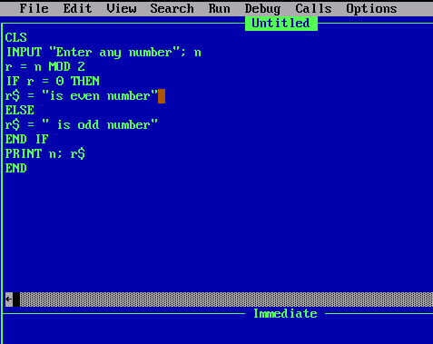
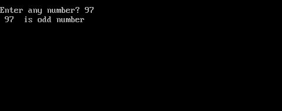
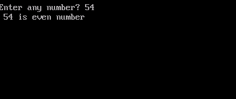

CLS
REM "To find whether a number is even or odd"
INPUT "Enter any number"; n
r = n MOD 2
IF r = 0 THEN
r$ = " is Even number"
ELSE
r$ = " is Odd number"
END IF
PRINT n;r$
END
You should write a program in Qbasic in following method.

You can see its output in the below figure"
|  |
 |